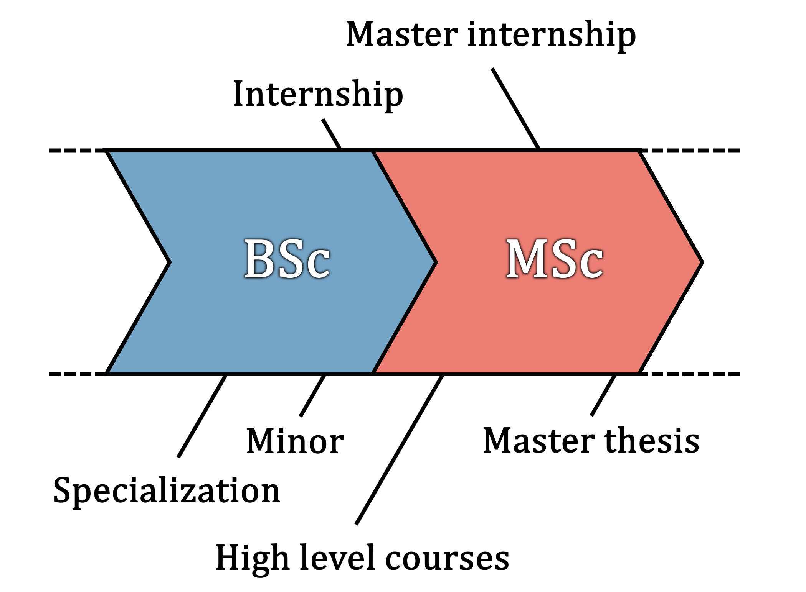

Chapter 2 What Can You Do with a BSc Biology?
Skills developed in this chapter: Career orientation, professional identity
You have chosen a to pursue a bachelor degree in biology. What are the direct options after your education? Should you pursue a master degree? Which one? When should you start thinking about this? These are questions I imagine many of you have.

2.1 When Should I Choose What?
For a quick overview, have a look at this flowchart (PDF).
A bachelor of science is also your entrance ticket to a master program. In The Netherlands, a large majority of students that obtain a bachelor degree go on to pursue a master degree. According to the national student survey, 91% of biology students at Leiden University go on to pursue a master degree.
2.2 What Is a Minor?
In the third year of your bachelor education, the first half of the year (30 ECTS) is spent on a minor education. You can use this to learn more about a specific topic in biology, or to broaden your knowledge by choosing a minor from a different institute.
The list of minor educations you can choose from changes from year to year, but rest assured: There are many minors that you can follow in the context of your biology major. As of writing, there are 56 minors offered by Leiden University, and it is also possible to follow a minor at TU Delft or the Erasmus University in Rotterdam. By the time you have to choose a minor, you will be informed of which are eligible for your bachelor education.
A minor can be a great opportunity to specialize in a specific area of biology, or to learn about a related field.
2.3 Where Can I Do an Internship?
In the third year of your education, after you complete your minor, you will do an internship
You often hear the word ‘networking’. It is through your network that you can find interesting opportunities, like an internship position.
What is networking then? The moment you enter the university, your networking has begun. Every person you come into contact with is an opportunity for you to get to know their work or research. Never hesitate to ask your professor or any of the assistants about their research—they are probably happy to talk about it.
Also always by on the lookout for internship markets. There are plenty of research groups looking for an intern.
2.4 Which Masters Can I Do?
To choose your master, always try to join the master’s day/week. At this event, all master educations can provide you with information on their contents and admission requirements. It is never too soon to orient, so try to join whenever you can.
The IBL offers several master programs to students with a bachelor degree in biology. These include:
- From Cells To Organisms
- Evolutionary Biology
- Molecular Genetics & Biotechnology
- Biodiversity and Sustainability
- Biology and Education
- Biology and Science Communication and Society
- Biology and Business Studies
Although it well be extra challenging due to differences in bachelor courses, you can also follow a master program from other institutes, some examples include:
- Biomedical Sciences;
- Biopharmaceutical Science;
- Life Science & Technology;
- Statistics & Data Science;
- Masters from the Institute of Environmental Sciences;
- Masters from other universities.
Assignment 2
Write in 400–500 words where you see yourself 5–10 years from now. You can use the following questions as reference:
- Why did you choose this education?
- Are there any subjects you are good at, or enjoy learning about?
- Do you have any plans for a minor, or master education yet?
- Where would you like to do an internship and why?
- Do you currently aspire a career in academia, or elsewhere?
- How do you currently balance work and life? How do you feel about that?
2.5 Changing Programs (*)
Switching to another bachelor program is a big decision. You should always discuss this with the student coordinator.1 With that said, here are somethings to consider:
- Successfully completing your first year gets you a certificate (propedeuse), so another suitable moment is after the first year;
- Successfully completing a bachelor degree in science opens many doors. You may not have to switch at all;
- Skills learned in one education may transfer well to another, and occasionally you can even get exemption from certain courses that are similar to what you followed.
If the link is broken, search online for “Studieadviseur biologie Leiden”.↩︎